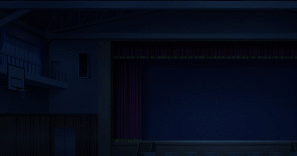
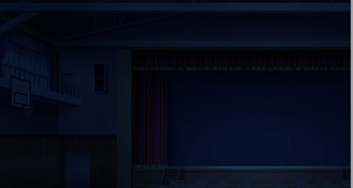
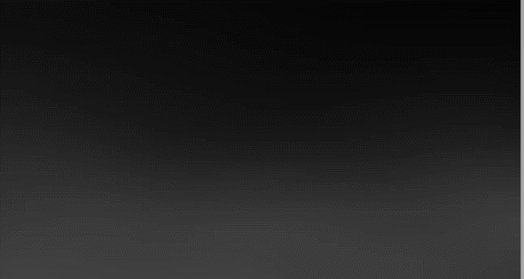
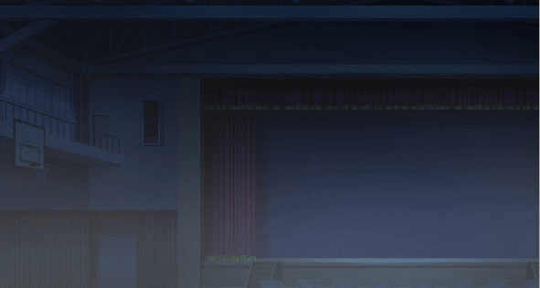
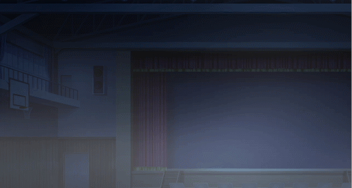

Path- 打开一个路径编辑器，允许您通过曲线定义路径。您可以右键单击删除运动点。
S 圆圈(
-
) 是运动的起点。绿色圆圈
 (
( -
) 是运动中的一个点，它允许您拥有更动态的运动。黄色圆圈
 (
( -
) 调整运动曲线。如果您按绿色圆圈（），您也可以调整该路径的运动。
 E 圆圈(
E 圆圈( -
) 是运动的终点。Mirror Vertical -
 垂直翻转曲线。
垂直翻转曲线。
P
lay movies in your game as a cinematic experience or to display as effects that enhance your scene.Play Movie
播放电影文件。当使用此命令播放电影时，游戏将不会继续，直到电影播放完毕或被跳过。玩家可以通过在播放时单击屏幕来跳过电影，并且视频跳过在游戏设置中已启用。电影将根据屏幕分辨率进行缩放。
File
- 控制电影播放的最大音量。Rate -
更改电影的速度。Show Movie
Number
- 电影的索引（ID）。这决定了它们的图层顺序。File
- 将要显示的“Movies”文件夹中的电影文件。X
- 指定电影在屏幕上的水平位置。 Y
- 指定电影在屏幕上的垂直位置。Duration
- 入场动画的持续时间（以毫秒为单位）。Continue
将立即继续场景。Wait
将等待直到入场动画完成。Effects
- 这些选项会影响电影的出现方式。Easing
设置电影的缓动移动。有关更多信息，请参阅 Easing Effects页面。Animation
设置电影的移动。Movement
是电影的起点，它将从左/上/右/下出现。Blending
允许您淡入/淡出电影。Masking
允许您将电影遮罩到 Masks 文件。Vague
是遮罩边缘的平滑度。这里是 Vague 值 0（最小值）和 255（最大值）的比较。Display

- 允许您指定电影的显示顺序和锚点。Anchor -
在左上角和中心之间选择您的锚点位置。将锚点设置为中心仅在缩放和旋转命令将使用时才重要，并且不会影响定位。
Z-Order
设置电影的显示顺序。Blend Mode
- 确定电影如何与屏幕上的对象混合。Normal
是标准混合模式。Additive
导致电影以更亮的颜色应用。Subtractive
导致电影以更暗的颜色应用。 Viewport
- 将分配电影的视口。视口决定电影是否受相机移动或屏幕效果的影响。Scene
- 电影被分配到场景视口，并像属于场景的对象一样表现，因此会受到相机移动和屏幕效果的影响。User Interface
- 电影被分配到 UI 视口，并像属于用户界面的对象一样表现，因此不会受到相机移动和屏幕效果的影响。Blend Movie
Number
- 您要操作的电影的索引（ID）。Opacity
- 透明度。Duration
- 混合动画的持续时间。Continue
将立即继续场景。Wait
将等待直到缩放动画完成。Easing
影响混合动画。有关更多信息，请参阅 Easing Effects页面。Zoom Movie
Number
- 要应用缩放的电影的索引（ID）。Zoom X- 影响电影的水平缩放和大小。
Zoom Y- 影响电影的垂直缩放和大小。
Duration- 缩放持续时间（以毫秒为单位）。
Continue将立即继续场景。
Wait将等待直到退出动画完成。
Effects- 这些选项会影响电影的出现方式。
Easing设置电影的缓动移动。有关更多信息，请参阅
Easing Effects页面。Move Movie操作电影的位置。
- 您要操作的电影的索引（ID）。
X- 指定电影在屏幕上的水平位置。
Y- 指定电影在屏幕上的垂直位置。
Duration- 移动动画的持续时间（以毫秒为单位）。
Continue将立即继续场景。
Wait将等待直到移动动画完成。
Easing设置电影的缓动移动。有关更多信息，请参阅
Easing Effects页面。Movie Motion Blur将运动模糊应用于您的电影。这必须在电影的移动命令（如 [Move Movie] 或 [Move Movie Along Path]）之上设置。
- 您要操作的电影的索引（ID）。
Motion Blur- 设置为“是”以应用运动模糊，“否”则关闭。
Spawn Time- 创建新副本后的帧数。默认值为 2。
Dissolve Speed- 复制品消散的速度。具体来说，副本的透明度每帧都会降低。
Opacity- 复制电影生成时其透明度。默认值为 100。
例如，如果溶解速度为 2，则影子/幽灵/粒子在 50 帧后完全不可见/死亡。Move Movie Along Path
允许您通过使用点和曲线创建自定义移动路径来移动电影。
- 您要操作的电影的索引（ID）。
Path- 打开一个路径编辑器，允许您通过曲线定义路径。您可以右键单击删除运动点。
S 圆圈(
) 是运动的起点。绿色圆圈(
) 是运动中的一个点，它允许您拥有更动态的运动。黄色圆圈(
) 调整运动曲线。如果您按绿色圆圈（），您也可以调整该路径的运动。E 圆圈(
) 是运动的终点。Mirror Vertical -垂直翻转曲线。

Mirror Horizontal- 水平翻转曲线。
Rotate 90*- 旋转曲线 90 度。
Effects- 允许您在电影沿路径移动时设置定时声音效果。
Loop- 允许您在持续时间内重复路径。
None- 关闭循环。
Normal- 从终点循环路径。
Reversed- 从终点反向循环路径。
持续时间- 运动完成所需的时间（毫秒）。
继续将使场景立即继续。
等待将使场景等待直到运动完成。
以指定的速度和方向旋转您的影片。
编号- 您想要操作的影片索引（ID）。
方向- 将文本设置为顺时针或逆时针旋转。
速度- 旋转速度。值越高，旋转速度越快。
持续时间- 确定旋转将持续多长时间。
继续将使场景立即继续。
等待将使场景等待直到退出动画完成。
缓动影响旋转的动画。更多信息请参阅缓动效果页面。
更改当前显示的影片的色调。
编号- 您想要操作的影片索引（ID）。
色调控制- 控制影片颜色。调整红色、绿色和蓝色的色调（-255 至 255）。
使用灰色设置灰度滤镜的强度（0 至 255）。值越高，颜色的整体强度越大。
对话框底部的“正常”、“深色”、“棕褐色”、“早晨”和“夜晚”按钮可用于快速应用其名称所代表色调的标准值。
“正常”按钮恢复到原始色调。您可以在对话框顶部的预览区域中查看色调变化。
持续时间- 确定色调效果将持续多长时间。
继续将使场景立即继续。
等待将使场景等待直到退出动画完成。
缓动影响色调的动画。更多信息请参阅缓动效果页面。
瞬间用指定颜色填充影片，然后逐渐恢复到原始颜色。
编号- 您想要操作的影片索引（ID）。
颜色控制- 控制闪烁颜色。使用红色、绿色和蓝色滑块（0 至 255）指定要闪烁的颜色。
您可以在对话框顶部的预览区域中查看您指定的颜色。使用“强度”指定颜色的不透明度（0 至 255）。
将“强度”设置为“0”会使颜色完全透明，使其在屏幕上不可见。
持续时间- 确定闪烁效果将持续多长时间。
继续将使场景立即继续。
等待 将使场景等待直到闪烁动画完成。
重新定义影片的边框，以您希望的方式构图您的影片，而无需编辑原始影片文件。
编号- 您想要操作的影片索引（ID）。
X- 从影片原始尺寸的左侧或右侧开始裁剪影片，单位为像素。
Y- 从影片原始尺寸的顶部或底部开始裁剪影片，单位为像素。
宽度- 从您上面设置的 X 位置开始设置裁剪后影片的新宽度。
高度- 从您上面设置的新 Y 位置开始设置裁剪后影片的新高度。
将遮罩应用于影片。
编号- 您想要操作的影片索引（ID）。
文件- 选择一个遮罩文件应用于您的影片。
文件- 选择一个遮罩文件应用于您的影片。
影片允许您将影片文件用作遮罩。您的影片文件需要以 .webm 格式导入到“影片”文件夹中。
即使您的影片文件包含颜色信息，它也会自动使用红色通道进行遮罩。
类型- 选择您想要进行的遮罩类型。
静态允许您叠加一个应用了 Alpha 通道的遮罩影片。

X 偏移量根据设置的值将遮罩影片向左或向右移动。
Y 偏移量将遮罩影片向上或向下移动。
动态遮罩允许您使用遮罩显示影片的特定部分。

值可以是 0 到 255 之间的任何值。它控制遮罩影片中哪些像素将可见。
如果值为 0，则不会显示影片遮罩的任何部分。值越高，显示的影片遮罩越多。
模糊允许您在遮罩边缘应用平滑效果。此处是模糊值为 0（最小值）和 255（最大值）的比较。


持续时间- 确定遮罩效果需要多长时间。
继续将使场景立即继续。
等待将使场景等待直到遮罩效果完成。
效果- 这些选项会影响影片的显示方式。
缓动设置影片的缓动运动。更多信息请参阅缓动效果页面。
擦除场景中显示的影片。
编号- 您想要从屏幕上移除的影片索引（ID）。
持续时间- 影片从场景中消失所需的时间。
继续将使场景立即继续。
等待将使场景等待直到退出动画完成。
缓动影响退出动画。更多信息请参阅缓动效果页面。
动画设置影片的擦除动画。
移动是影片消失的起点，从左/上/右/下消失。
混合允许您淡出影片。
遮罩允许您将影片遮罩到遮罩文件。
模糊是遮罩边缘的平滑度。此处是模糊值为 0（最小值）和 255（最大值）的比较。


将效果应用于影片。
类型- 将应用于背景的效果。
抖动使影片以不规则和摇晃的运动方式移动。仅在禁用循环时才有效。
强度设置抖动的强度。值越高，抖动效果越明显。
速度 设置抖动的速度。值越高，速度越快。
方向- 设置抖动方向。
垂直将抖动方向设置为垂直方向。
水平将抖动方向设置为水平方向。
两者将抖动方向设置为两个方向。
持续时间设置效果持续的时间（毫秒）。
模糊对影片没有影响。
像素化使影片看起来像素化/块状。
宽度设置单个块/像素的宽度。
高度设置单个块/像素的高度。
持续时间设置像素化达到指定块/像素大小所需的时间（毫秒）。使用此选项可平滑地像素化影片。
缓动将缓动应用于效果动画。更多信息请参阅缓动效果页面。
允许覆盖影片特定命令的默认值。
出现持续时间是显示动画的持续时间（毫秒）。
消失持续时间 是擦除动画的持续时间（毫秒）。
出现效果
出现持续时间是显示动画的持续时间（毫秒）。
消失持续时间是擦除动画的持续时间（毫秒）。
出现效果
缓动是显示动画使用的缓动设置。
动画是显示动画的动画设置。
消失效果
缓动是擦除动画使用的缓动设置。
动画是擦除动画的动画设置。
显示
锚点 -在左上角和中心之间选择您的锚点位置。
将锚点设置为中心仅在缩放和旋转命令使用时才重要，并且不会影响定位。
Z 顺序是影片的 Z 索引。
运动模糊
- 设置为“是”以应用运动模糊，“否”以将其关闭。生成时间
- 创建新副本后经过的帧数。默认值为 2。溶解速度
- 副本消散的速率。具体来说，副本的透明度在每一帧都会降低。不透明度
- 副本生成时初始的不透明度。默认值为 100。